The Beach
- For the beaches of the Fern Islands, see Ginger Island.
The Beach is located to the south of Pelican Town. It is a valuable area for fishing as it is one of the few sources for saltwater fish. In addition, many shells and forageable items can be found washed up on the beach, especially during Summer 12-14.
In Summer, the Luau and Dance of the Moonlight Jellies festivals are held on the beach. In Winter, SquidFest is held on the beach from the 12th to the 13th and the Night Market is held on the pier from the 15th to the 17th.
Features
Elliott's Cabin
Elliott's Cabin is located on the main beach, just east of the entrance. Elliott spends much of his time inside, standing on the beach in front of his cabin, or on the docks next to the Fish Shop.
Fish Shop
The Fish Shop is located on the main docks and is owned and operated by Willy. It sells various fishing supplies and fish tanks.
Tide Pools
The tide pools are found at the east end of the beach, and are the primary place to find Coral and Sea Urchins. At the start of the game, the wooden footbridge across the river is broken. Until the bridge is repaired (requiring 300 pieces of wood) or the second community upgrade is purchased, the tide pools are inaccessible.
On rainy or stormy days, the Old Mariner stands at the north side of the beach past the tide pools.
Warping
The player can warp to the beach using a Warp Totem: Beach (consumed on use) or a Water Obelisk (reusable). Both methods warp the player to the same location.
Shortcuts
After purchasing town shortcuts, the west side has a shortcut to Leah's Cottage and the northeast area has a shortcut to the area south of the Museum.
Foraging
All items collected at the beach provide 7 Foraging experience points.[1]
Festivals effectively hide all forageable items and artifact spots because they use custom versions of the Beach map. This is particularly noticeable during the Night Market: forageables and artifact spots continue to spawn every night, but all of them appear on the standard (hidden) version of the Beach. Afterwards (on Winter 18th), the accumulated items from all three nights can be collected.
Standard Foraging
The beach is a rich source for forageable items. Not only does it have several extra sources of forageable items, but items also spawn at a relatively fast rate on the Beach. Most of the forageable items are available year-round; Rainbow Shells and Nautilus Shells are the only season-specific items:[2]
 Clam (56% Spring/Fall, 43% Summer, 24% Winter)
Clam (56% Spring/Fall, 43% Summer, 24% Winter) Mussel (19% Spring/Fall, 14% Summer, 12% Winter)
Mussel (19% Spring/Fall, 14% Summer, 12% Winter) Oyster (19% Spring/Fall, 14% Summer, 12% Winter)
Oyster (19% Spring/Fall, 14% Summer, 12% Winter) Cockle (6% Spring/Fall, 5% Summer, 3% Winter)
Cockle (6% Spring/Fall, 5% Summer, 3% Winter)- Only in Summer:
 Rainbow Shell (24%)
Rainbow Shell (24%) - Only in Winter:
 Nautilus Shell (48%)
Nautilus Shell (48%)
Possible locations where these items can spawn are shown in red on the map. The locations include nearly any dry sand west of the broken bridge, plus most dry sand east of the bridge. Because 80% of the possible spawn locations are west of the bridge, items are four times more likely to spawn west of the bridge. The large number of spawnable locations at the beach lead to a high average daily spawn rate of 1.1 per night.[3] However, at most six items are possible at one time: this limit includes items on both sides of the bridge, but only includes the standard forageable items listed here (not Coral, Sea Urchins, or Seaweed).
Even though most of the Beach items are not season-specific, they are still removed before the first day of any season, as well as before Sunday morning. This includes the tidepool items and bonus summer items.[4]
Tide Pool Foraging
Several special items appear (normally) only in the tide pool region east of the bridge. These items spawn separately from the standard forage items, and therefore do not count as part of the six item per map limit.
 Coral and
Coral and  Sea Urchins can spawn throughout the tide pool area (shown in blue on the map). There is no hard limit on the number of either item. The average spawn rate for all tide pool items is 1.2 items per night;[5] unlike standard forageables, this rate does not increase on Sunday mornings or the first day of a season. 20% of all tide pool items will be Sea Urchins, and 80% Corals. Some of the Coral and Sea Urchins that spawn can be overlooked, because they may be present in the semi-obscured tiles behind the bush-like sea anemones found by the tide pools.
Sea Urchins can spawn throughout the tide pool area (shown in blue on the map). There is no hard limit on the number of either item. The average spawn rate for all tide pool items is 1.2 items per night;[5] unlike standard forageables, this rate does not increase on Sunday mornings or the first day of a season. 20% of all tide pool items will be Sea Urchins, and 80% Corals. Some of the Coral and Sea Urchins that spawn can be overlooked, because they may be present in the semi-obscured tiles behind the bush-like sea anemones found by the tide pools.
 Seaweed can also spawn near the tide pools, but only in a narrow strip right by the shore (shown in green on the map). There is a 3% chance per night of Seaweed spawning.
Seaweed can also spawn near the tide pools, but only in a narrow strip right by the shore (shown in green on the map). There is a 3% chance per night of Seaweed spawning.
Summer Bonus Foraging
Extra items are found on the beach on summer 12-14. Some of the bonus items are standard forageables because their spawning rate is slightly higher than usual (1.4/night instead of 1.1/night).[6]
More noticeably, extra Corals and Sea Urchins spawn during these three days, at an average rate of 4/night (20% Sea Urchins, 80% Corals).[7] They can appear nearly anywhere on the beach (white areas on map) -- both east and west of the bridge -- except for the piers. This is only the time of year when Corals and Sea Urchins appear at the west end of the beach.
During these three days, the ocean is distinctly greener than usual.[8] However, the map is otherwise unchanged, and therefore any objects previously placed on the beach (Crab Pots, Chests, Trees, etc.) remain available, unlike during other events on the beach.
Artifact Spots
Artifacts that can be found by digging up Artifact Spots on the Beach are:
- Dried Starfish (8%)
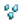
Glass Shards (7%)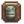
Trilobite (1.7% + 2.3-5%[9]) Anchor (4%)
Anchor (4%)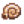
Nautilus Fossil (1.7%)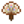
Ornamental Fan (1.6%)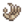
Skeletal Hand (0.6%)- Palm Fossil (0.6%)
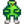
Strange Doll (green) (0.06%)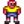
Strange Doll (yellow) (0.06%)
Other possible items are:
- 1-3
 Clay (14-30%[9])
Clay (14-30%[9]) - Lost Book (20% + 3-7%[9]); once all Lost Books have been found, any potential Lost Book is replaced by
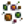
Mixed Seeds. - Only in Winter:
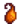
Winter Root (17%) - Only in Winter: Snow Yam (11%)
- 1-3
 Stone (5-10%[9])
Stone (5-10%[9]) - 1-3
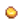
Gold Ore (2.2-4%[9]) - 2-5 Qi Bean: 6.7-13.4%[9] chance, only during the Qi's Crop quest.
- 2-5
 Bone Fragment: 5.6-11.2%[9] chance, only after completing Gunther's Special Order "Fragments of the past"
Bone Fragment: 5.6-11.2%[9] chance, only after completing Gunther's Special Order "Fragments of the past" - An unseen
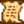
Secret Note: up to 3% chance, only if the player has a Magnifying Glass. - 1 Warp Totem: Farm, Warp Totem: Mountains, or Warp Totem: Beach: up to 3% chance, starting Summer of year 1
Note that Rice Shoots are never found at the Beach (neither in Artifact Spots nor in Fishing Treasure Chests).
Artifact spots spawn on the beach at an average rate of 0.4 per night, except in winter when the average rate increases to 0.5 per night.[10]
Fishing
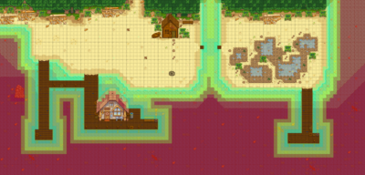
All water at the beach is considered to be saltwater, even the section of the river upstream of the bridge. Therefore, the same fish are available regardless of where on the beach the player is fishing (with the exceptions of the Crimsonfish, one of the five Legendary Fish, and the Son of Crimsonfish, one of the five Legendary Fish II, that are only available from the east end of the beach).
Visually, the piers seem to provide better access to deep (dark blue) water. However, in terms of fishing mechanics the piers are considered to be land. Therefore, casts made from the end of the pier have no inherent advantage over casts made from the shore. Similarly, the light blue (apparently shallow) water color to the east and west of the beach has no actual gameplay significance.
Bubbles tend to appear at the Beach more often than other locations because such a large fraction of the map is covered in water.[11] However, they also frequently appear so far offshore that they are unreachable, even with high Fishing skill.
| Time | |||||||||||||||||||||
|---|---|---|---|---|---|---|---|---|---|---|---|---|---|---|---|---|---|---|---|---|---|
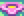 Spring |
6 | 7 | 8 | 9 | 10 | 11 | 12 | 1 | 2 | 3 | 4 | 5 | 6 | 7 | 8 | 9 | 10 | 11 | 12 | 1 | |
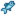 Sardine |
|||||||||||||||||||||
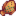 Flounder |
|||||||||||||||||||||
| Anchovy | |||||||||||||||||||||
| Herring | |||||||||||||||||||||
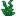 Seaweed |
|||||||||||||||||||||
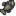 Halibut |
|||||||||||||||||||||
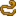 Eel |
Rainy day only | ||||||||||||||||||||
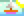 Summer |
6 | 7 | 8 | 9 | 10 | 11 | 12 | 1 | 2 | 3 | 4 | 5 | 6 | 7 | 8 | 9 | 10 | 11 | 12 | 1 | |
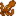 Octopus |
|||||||||||||||||||||
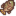 Tilapia |
|||||||||||||||||||||
| Red Mullet | |||||||||||||||||||||
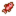 Red Snapper |
Rainy day only | ||||||||||||||||||||
| Tuna | |||||||||||||||||||||
| Flounder | |||||||||||||||||||||
| Seaweed | |||||||||||||||||||||
| Halibut | |||||||||||||||||||||
| Pufferfish | Sunny day only | ||||||||||||||||||||
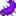 Super Cucumber |
|||||||||||||||||||||
| Fall | 6 | 7 | 8 | 9 | 10 | 11 | 12 | 1 | 2 | 3 | 4 | 5 | 6 | 7 | 8 | 9 | 10 | 11 | 12 | 1 | |
| Tilapia | |||||||||||||||||||||
| Red Snapper | Rainy day only | ||||||||||||||||||||
| Sardine | |||||||||||||||||||||
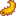 Sea Cucumber |
|||||||||||||||||||||
| Anchovy | |||||||||||||||||||||
| Seaweed | |||||||||||||||||||||
| Albacore | |||||||||||||||||||||
| Eel | Rainy day only | ||||||||||||||||||||
| Super Cucumber | |||||||||||||||||||||
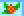 Winter |
6 | 7 | 8 | 9 | 10 | 11 | 12 | 1 | 2 | 3 | 4 | 5 | 6 | 7 | 8 | 9 | 10 | 11 | 12 | 1 | |
| Red Mullet | |||||||||||||||||||||
| Sardine | |||||||||||||||||||||
| Sea Cucumber | |||||||||||||||||||||
| Tuna | |||||||||||||||||||||
| Herring | |||||||||||||||||||||
| Red Snapper | Rainy day only | ||||||||||||||||||||
| Seaweed | |||||||||||||||||||||
| Albacore | |||||||||||||||||||||
| Halibut | |||||||||||||||||||||
| Squid | |||||||||||||||||||||
Notes
- The broken bridge to the eastern section of the beach is not the quarry bridge (which is repaired by completing the Crafts Room bundles in the Community Center.)
- Panning is not possible at the beach except during the Night Market.[12]
Trivia
- On the northwestern side of the beach there is a suspicious looking opening between two trees. However, the path is blocked by a bunch of woodplanks.
- Although identified as salt water, and therefore dangerous to many plants, the player can fill the watering can from the ocean and use the water on any crops.
Secrets
References
- ↑ Experience is rewarded by GameLocation::checkAction, based in part on whether an item Object.isForage. Although shells and fish would not normally qualify as forage items, Object.isForage explicitly allows all items found on the beach to be considered forage.
- ↑ For each forage item, the provided percentage is the average percentage of all standard forage items that will be the specified item for that season. The input data is Locations.xnb, which is processed by code in GameLocation::spawnObjects.
- ↑ Of the 5200 total tiles at the beach, 647 (12%) are valid spawn locations for standard forage items. 133 of these locations are east of the broken bridge. For more information on forage item spawning, see Foraging.
- ↑ See game code in Beach::DayUpdate. Note that all extra items are created using GameLocation::dropObject, which gives them the isSpawnedObject flag, causing them to automatically be destroyed at the end of a week/season.
- ↑ The game code spawning tide pool items is in Beach::DayUpdate. Coral and Sea Urchins are created within a loop that starts with a base 100% chance, then repeats indefinitely, multiplying the chance by 0.5 each time, until one of the tests fail. The actual spawn rate is reduced slightly by valid locations: the code randomly selects any of 300 tiles, but only 212 of the tiles are valid spawning tiles. Seaweed is created within a second loop, where the chance of the first seaweed is 0.025 (0.25*0.1), but multiple loops are also possible. Location selection does not alter the spawning chance, because all 17 possible seaweed tiles are valid spawning tiles.
- ↑ During summer 12-14, GameLocation::spawnObjects is called six times instead of one: Beach::DayUpdate calls it five times on top of the standard call made by GameLocation::DayUpdate. However, the extra calls to spawnObjects are largely ineffective, because the same locations are tested every time -- the random-number seed (based on game ID and days played) is always the same.
- ↑ During summer 12-14, the extra Coral and Sea Urchins have 1239 valid spawning tiles out of the 2600 that could be randomly selected.
- ↑ Beach::resetSharedState changes the water color, adding a green overlay, only on Summer 12-14.
- ↑ 9.0 9.1 9.2 9.3 9.4 9.5 9.6 The chance of finding extra items in Artifact Spots in season-dependent: the chance is 50% smaller in winter. See Artifact Spot for more information.
- ↑ Of the 5200 total tiles at the beach, 777 are valid spawn locations for artifact spots year-round. See Artifact Spot for more information.
- ↑ The raw chance of bubbles forming at the beach is the same as on all other maps, see GameLocation::performTenMinuteUpdate, specifically regarding fishSplashPoint. However, the code randomly selects any tile on the map and only creates bubbles if that tile happens to be a "fishable" tile. With 2307 of 5200 (44%) fishable tiles, the Beach has a much higher fraction than other maps.
- ↑ The code in GameLocation::performTenMinuteUpdate that spawns orePanPoints is skipped on the Beach, but the test does not recognize the BeachNightMarket map.
History
- 1.4: Added spawning of forageable Seaweed. Can no longer place items at the Beach during the Night Market.
- 1.5: New Shortcuts Community Upgrade allows access to the tide pool area without repairing the bridge.
| Locations | |
|---|---|
| Locations | Backwoods • Beach • Bus Stop • Calico Desert • Cindersap Forest • Farm • Farm Cave • Farm Pond • Graveyard • Ginger Island • Mastery Cave • Minecart • Mines • Mountain • Mutant Bug Lair • Pelican Town • Quarry • Quarry Mine • Railroad • Secret Woods • Sewers • Skull Cavern • Summit • Tunnel • Volcano Dungeon • Witch's Swamp |